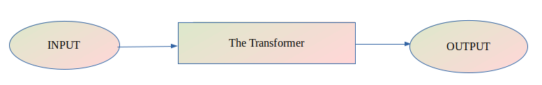
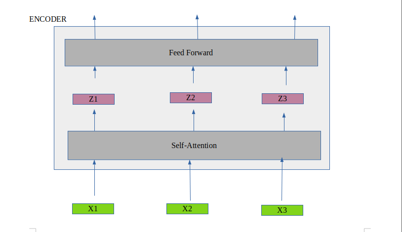
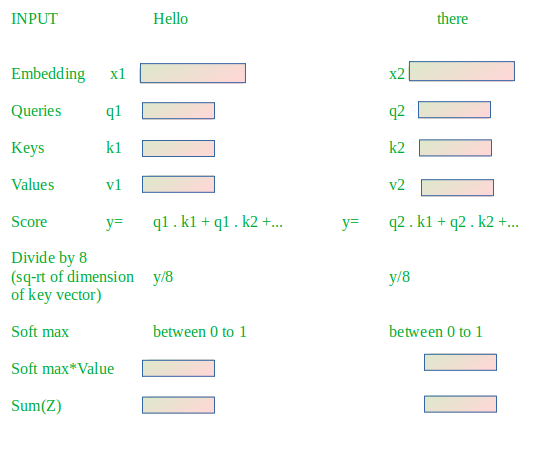
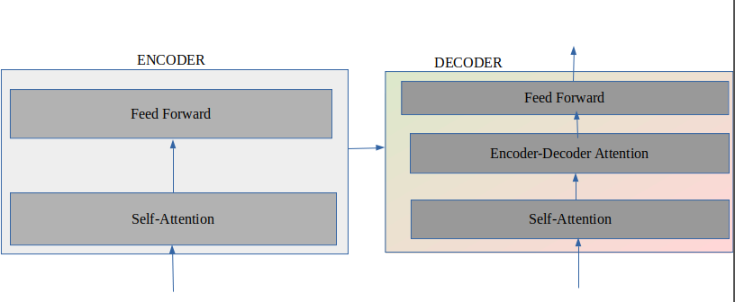
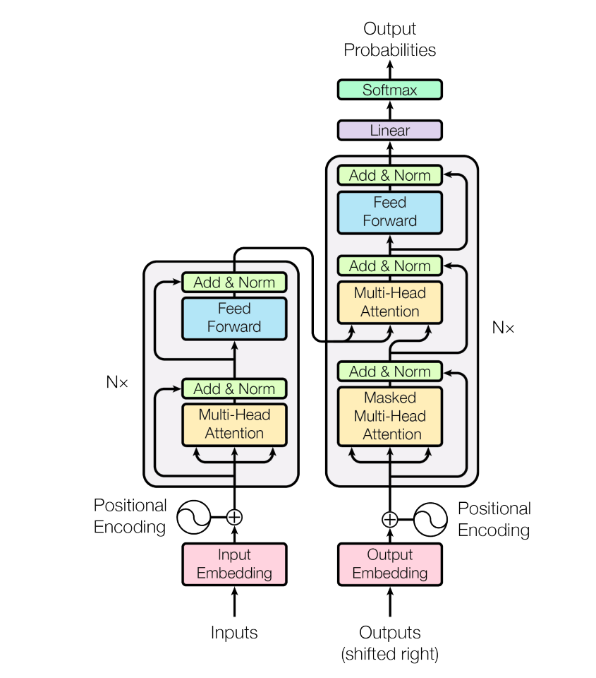

Attention Is All You Need is a breakthrough Natural Language Processing(NLP) paper published by the Google Research team in 2017. The paper proposed a transformer architecture consisting of six encoder and decoder blocks stacked on top of each other. Since then it has taken the NLP world by storm. They are used in many applications like machine language translation, conversational chatbots, and even to power better search engines. These days we see this architecture used in computer vision as well.
Let’s begin by looking at the model as a single black box where we need to perform language translation(say English to Nepali). What is inside the black box? Let’s find out.

There are encoder and decoder modules in the transformer. The encoding component is a stack of six encoders and the decoding component is the same but with a decoder. Each encoder is connected to all six decoders.
The encoder itself consists of two layers: self-attention and feed-forward layer. The self-attention layer of the first encoder takes embedded input. Each input word is embedded into a vector of size 512, before passing that to the transformer. While giving input to the model along with the embedding vector, the positional vector is added to account for the order of the words in the input sequence. After that, the result of the first self-attention is passed to the first feed-forward neural network within the first encoder block. The output of the first feed-forward layer is passed to the second encoder and so on.

The self-attention layer deals with the subtlety of the language. Let’s dive deeper into the self-attention layer.
The first step is to create three addition vectors named as key, query, and value. These vectors are just the abstraction to calculate the self-attention score. After that, we calculate the score by taking the dot product of query1key1, query1key2, and so on. We have a key vector of all input words since inputs are given parallelly. Also, we divide each score by sqrt of the dimension of a key vector which is 8, as the dimension of a key vector discussed in the paper is 64. Further, the result is passed through softmax operation so all the scores are positive and add up to 1. The output of softmax is multiplied with the value vector(v1). Then, the result is summed up to produce the self-attention output of the first word( Say Z1). This Z1 is sent to feed-forward network. This process is repeated for every input word.

To further catch the subtlety of the language, the paper improves the self-attention layer by adding a mechanism called “multi-headed” attention. It is the same as self-attention but with multiple keys, queries, and values matrix. The paper uses 8 attention heads. So, we will get 8 different z1 matrices for each input word. We concat all of them. During training, we initialize another matrix(W0) which we will use to multiply our concatenated matrix to get a single Z1.
The decoder is similar to that of the encoder but with one additional layer. The new layer, the encoder-decoder attention layer, is sandwiched between self-attention and feed-forward neural network. E-D layer creates queries matrix from the layer below it and takes keys and values from the output of the encoder and does the same calculation as multi-headed self-attention. The self-attention layer in the decoder is only allowed to know the earlier position of the output sequence. This is done by masking future positions before the softmax step.
Likewise, layers are normalized after every self-attention and feed-forward layer. Also, each encoder and decoder has a residual connection around it.

Lastly, the output of the decoder is passed through the linear and softmax layer. The linear layer is a simply connected neural network. It is as wide as the vocab size of our model. Each cell here corresponds to unique words. This layer is passed to the softmax, which turns all the scores into probability. And, the word with the highest probability is chosen.
